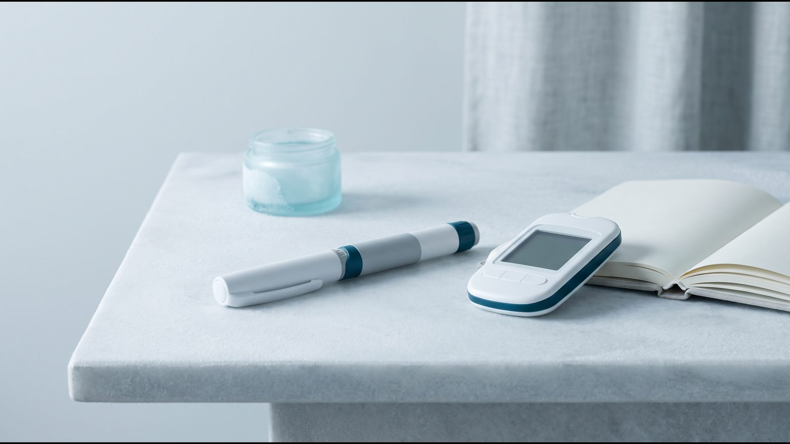

Результаты Ozempic® в исследованиях: сколько веса теряли на семаглутиде

Сколько теряли на Ozempic® в исследованиях: короткий ответ
Результаты Ozempic® (семаглутид) по весу изучали у людей с сахарным диабетом 2 типа. В исследованиях SUSTAIN дозы 0,5 и 1 мг за 30–104 недели снижали массу тела в среднем на 3,6–6,5 кг. Известные цифры около −15 % получены в исследованиях STEP на семаглутиде 2,4 мг, то есть в дозе препарата Wegovy® (Вегови®), а не Ozempic®. Все цифры в статье — средние значения по группам, а не прогноз для отдельного человека.
Ozempic® и семаглутид 2,4 мг: почему эти данные не смешивают
По украинской инструкции Ozempic® применяют при недостаточно контролируемом сахарном диабете 2 типа как дополнение к диете и физическим упражнениям. Снижение массы тела показанием не является: инструкция упоминает его среди результатов исследований и среди частых побочных реакций.
Максимальная доза Ozempic® в Украине — 1 мг в неделю, инструкция прямо указывает, что еженедельные дозы выше 1 мг не рекомендованы. Доза 2 мг утверждена в ЕС и США, но не в Украине. Для контроля массы тела в Украине зарегистрирован другой препарат семаглутида, Вегови® ФлексТач®, в дозировках до 2,4 мг.
Получается, что STEP изучали ту же молекулу, но в дозе в 2,4 раза выше максимальной дозы Ozempic® в Украине и в основном у людей без диабета. Переносить эти цифры на Ozempic® некорректно. Чем семаглутид отличается от тирзепатида по механизму и данным прямого сравнения, разобрано в статье Mounjaro® или Ozempic®.

Исследования семаглутида: популяция, доза, срок и результат
В таблице собраны главные исследования с данными о весе. ИМТ — индекс массы тела; рассчитать свой можно в калькуляторе ИМТ.
| Исследование | Кто участвовал | Доза | Срок | Изменение массы тела |
|---|---|---|---|---|
| SUSTAIN 1 (инструкция Ozempic® от EMA) | диабет 2 типа, семаглутид как единственный сахароснижающий препарат | 0,5 и 1 мг (дозы Ozempic®) | 30 недель | −3,7 и −4,5 кг; плацебо −1,0 кг |
| SUSTAIN 7 (Lancet Diabetes Endocrinol, 2018) | диабет 2 типа, прием метформина | 0,5 и 1 мг; сравнение с дулаглутидом | 40 недель | −4,6 и −6,5 кг; дулаглутид −2,3 и −3,0 кг |
| SUSTAIN 6 (украинская инструкция Ozempic®) | 3297 человек с диабетом 2 типа; исследование сердечно-сосудистых исходов | 0,5 и 1 мг | 104 недели | −3,6 и −4,9 кг; плацебо −0,7 и −0,5 кг |
| STEP 1 (NEJM, 2021) | 1961 взрослый без диабета с ИМТ ≥30 или ≥27 и осложнением | 2,4 мг (доза Wegovy®) | 68 недель | −14,9 % (−15,3 кг); плацебо −2,4 % (−2,6 кг) |
| STEP 2 (Lancet, 2021; отчет EMA, 2022) | 1210 взрослых с диабетом 2 типа и ИМТ ≥27 | 1 и 2,4 мг | 68 недель | −7,0 % на 1 мг и −9,6 % на 2,4 мг; плацебо −3,4 % |
| STEP 5 (Nat Med, 2022) | 304 взрослых без диабета | 2,4 мг | 104 недели | −15,2 % (−16,1 кг); плацебо −2,6 % (−3,2 кг) |
SUSTAIN приводит изменение веса в килограммах, а STEP в процентах от исходной массы, поэтому строки таблицы напрямую не сравнивают. По украинской инструкции Ozempic®, через год лечения не меньше 5 % массы потеряли 46 % пациентов на 0,5 мг и 52–62 % на 1 мг, не меньше 10 % соответственно 13 % и 21–24 %. На препаратах сравнения (ситаглиптин, эксенатид пролонгированного действия) таких было 17–18 % и 3–4 %.
STEP 2 — единственное из этих исследований, куда с дозой 1 мг, то есть максимальной дозой Ozempic® в Украине, отбирали людей с диабетом 2 типа именно по ИМТ ≥27. По оценочному отчету EMA (2022), на этой дозе масса тела за 68 недель снизилась в среднем на 7,0 %, на дозе 2,4 мг на 9,6 %, на плацебо на 3,4 %.
Как читать эти цифры: среднее, разброс и условия исследования
Среднее значение скрывает разброс. В STEP 1 (NEJM, 2021) среди участников на семаглутиде 2,4 мг, которых взвесили на 68-й неделе, не меньше 5 % массы потеряли 86,4 %, не меньше 10 % — 69,1 %, не меньше 15 % — 50,5 %. Значит, среди них примерно каждый седьмой не достиг и 5 %, а по оценке EMA для всех участников группы (83,5 %) — примерно каждый шестой.
Отсюда правило: у одного исследования в разных источниках бывают разные цифры. Журнальная статья приводит долю среди тех, кого взвесили, а Европейское агентство по лекарственным средствам (EMA) в инструкции Wegovy® оценивает ее для всех участников, с расчетными значениями для пропущенных измерений. Поэтому в этой статье рядом с цифрами указан источник.
Условия исследований отличаются от обычной жизни. Участники STEP 1 получали препарат вместе с программой изменения образа жизни, и в группе плацебо вес за 68 недель тоже снизился на 2,4 %. Лечение окончательно прекратили 17,1 % участников группы семаглутида (данные EMA). По совместному руководству американских обществ ACLM, ASN, OMA и TOS (2025), в реальной практике эффект препаратов группы GLP-1 несколько ниже, чем в исследованиях.
Для некоторых групп доказательств мало. По оценке Европейской ассоциации по изучению ожирения (EASO, 2025), данных о лекарствах для людей с ИМТ выше 40 очень мало, а для ИМТ ниже 27 их нет совсем.
Вес не единственный исход, который измеряли. По украинской инструкции Ozempic®, в SUSTAIN 6 инфаркт, инсульт или смерть от сердечно-сосудистых причин случились у 6,6 % пациентов на семаглутиде против 8,9 % на плацебо, то есть риск был на 26 % ниже. В SELECT (NEJM, 2023) семаглутид 2,4 мг снизил риск таких событий на 20 % у людей от 45 лет без диабета, у которых уже была сердечно-сосудистая болезнь и ИМТ ≥27.
Почему личный результат отличается от среднего
Сами исследования подсказывают несколько факторов, от которых зависит разброс. Точно предсказать результат конкретного человека они не позволяют.
- Диабет 2 типа. На одинаковой дозе 2,4 мг за 68 недель участники с диабетом в STEP 2 потеряли в среднем 9,6 %, участники без диабета в STEP 1 — 14,9 %. Это разные исследования, так что сравнение ориентировочное.
- Доза. В SUSTAIN 7 доза 0,5 мг дала −4,6 кг, доза 1 мг — −6,5 кг, а в STEP 2 доза 1 мг дала −7,0 %, доза 2,4 мг — −9,6 % (отчет EMA). Украинская инструкция предусматривает повышение до 1 мг для дальнейшего улучшения гликемического контроля, то есть с оглядкой на сахар крови, а решение принимает врач.
- Переносимость. По украинской инструкции Ozempic®, на дозах 0,5 и 1 мг тошнота возникала у 17,0 % и 19,9 % пациентов, чаще всего в первые месяцы, а из-за желудочно-кишечных реакций лечение прекратили 3,9 % и 5 %. В объединенном анализе STEP 1–3 на дозе 2,4 мг (Wegovy®) такие реакции объясняли меньше 1 процентного пункта дополнительной потери веса; для доз Ozempic® такого анализа в рассмотренных источниках нет.
- Непрерывность. После отмены вес возвращался: в продолжении STEP 1 за год после отмены семаглутида 2,4 мг (доза Wegovy®) участники вернули около двух третей потерянного. Подробнее об этом в статье Вес после отмены Ozempic® и Mounjaro®, а о моменте, когда вес перестает снижаться, в материале Плато на Ozempic® и Mounjaro®.
Другие возможные причины слабого эффекта, от сопутствующих лекарств до хранения препарата, собраны в статье Почему не худеете на Ozempic® или Mounjaro®.
[КОММЕНТАРИЙ ВРАЧА: какие показатели, кроме веса, врач оценивает у пациента с диабетом 2 типа на Ozempic® и через какое время подводит первые итоги]
Частые вопросы
Сколько килограммов можно сбросить на Ozempic®?
Исследования не позволяют назвать число для конкретного человека. У людей с диабетом 2 типа на дозах 0,5 и 1 мг среднее изменение массы тела составляло от −3,6 до −6,5 кг за 30–104 недели (SUSTAIN 1, 6 и 7). Личный результат зависит от дозы, сопутствующих болезней, переносимости и длительности лечения.
Можно ли на Ozempic® получить результат, как в STEP 1?
STEP 1 изучал семаглутид 2,4 мг, а по украинской инструкции Ozempic® дозы выше 1 мг в неделю не рекомендованы. Поэтому цифра −14,9 % относится к дозе Wegovy®, а не Ozempic®. Препарат и дозу определяет врач.
Почему для одного исследования в разных источниках разные цифры?
Журнальные статьи и инструкции EMA считают результат разными статистическими методами. Например, доля участников STEP 1 с потерей не меньше 5 % массы составляет 86,4 % в NEJM и 83,5 % в инструкции Wegovy® от EMA. Первая цифра относится к участникам, которых взвесили на 68-й неделе, вторая оценена для всех участников, поэтому важно знать, откуда число.
Вернется ли вес, если прекратить лечение?
В продолжении STEP 1 за год после отмены семаглутида 2,4 мг участники в среднем вернули около двух третей потерянного веса. Данные получены на дозе 2,4 мг, так что для Ozempic® они ориентировочные. Завершение терапии планируют вместе с врачом, а не самостоятельно.
Что дальше
Если вы рассматриваете медикаментозное лечение, первый шаг — оценка показаний: эндокринолог выяснит, есть ли диабет 2 типа и другие состояния, от которых зависят выбор препарата и доза. Как устроена терапия в клинике, описано на странице Ozempic®; консультация онлайн и бесплатная.
Источники
- Інструкція для медичного застосування лікарського засобу ОЗЕМПІК®, РП UA/19176/01/01. МОЗ України, Державний реєстр лікарських засобів, дата останнього перегляду 15.07.2026. http://www.drlz.com.ua/ibp/ddsite.nsf/all/shlz1?opendocument&stype=BA8B8927450EC695C2258E370023202D
- Державний реєстр лікарських засобів України: ВЕГОВІ® ФЛЕКСТАЧ®, РП UA/20617/01/01–05. http://www.drlz.com.ua/ibp/ddsite.nsf/all/shlz1?opendocument&stype=0A4112B68E38398EC2258E92001BA7C9
- Ozempic: EPAR Product Information. European Medicines Agency. https://www.ema.europa.eu/en/documents/product-information/ozempic-epar-product-information_en.pdf
- Wegovy: EPAR Product Information. European Medicines Agency. https://www.ema.europa.eu/en/documents/product-information/wegovy-epar-product-information_en.pdf
- Wegovy: EPAR Public Assessment Report, EMA/112307/2022. European Medicines Agency, 2022. https://www.ema.europa.eu/en/documents/assessment-report/wegovy-epar-public-assessment-report_en.pdf
- OZEMPIC (semaglutide) injection: Prescribing Information. FDA, DailyMed, revised June 2026. https://dailymed.nlm.nih.gov/dailymed/drugInfo.cfm?setid=adec4fd2-6858-4c99-91d4-531f5f2a2d79
- Pratley RE et al. Semaglutide versus dulaglutide once weekly in patients with type 2 diabetes (SUSTAIN 7). Lancet Diabetes Endocrinol, 2018;6(4):275–286. https://doi.org/10.1016/S2213-8587(18)30024-X
- Wilding JPH et al. Once-Weekly Semaglutide in Adults with Overweight or Obesity (STEP 1). N Engl J Med, 2021;384(11):989–1002. https://doi.org/10.1056/NEJMoa2032183
- Davies M et al. Semaglutide 2·4 mg once a week in adults with overweight or obesity, and type 2 diabetes (STEP 2). Lancet, 2021;397(10278):971–984. https://doi.org/10.1016/S0140-6736(21)00213-0
- Garvey WT et al. Two-year effects of semaglutide in adults with overweight or obesity: the STEP 5 trial. Nat Med, 2022;28(10):2083–2091. https://doi.org/10.1038/s41591-022-02026-4
- Wharton S et al. Gastrointestinal tolerability of once-weekly semaglutide 2.4 mg in adults with overweight or obesity (STEP 1–3, pooled analysis). Diabetes Obes Metab, 2022;24(1):94–105. https://doi.org/10.1111/dom.14551
- Wilding JPH et al. Weight regain and cardiometabolic effects after withdrawal of semaglutide: The STEP 1 trial extension. Diabetes Obes Metab, 2022;24(8):1553–1564. https://doi.org/10.1111/dom.14725
- Lincoff AM et al. Semaglutide and Cardiovascular Outcomes in Obesity without Diabetes (SELECT). N Engl J Med, 2023;389(24):2221–2232. https://doi.org/10.1056/NEJMoa2307563
- Mozaffarian D et al. Nutritional priorities to support GLP-1 therapy for obesity: a joint Advisory from ACLM, ASN, OMA and TOS. Am J Clin Nutr, 2025;122(1):344–367. https://pubmed.ncbi.nlm.nih.gov/40450457/
- McGowan B, Ciudin A et al. Framework for the pharmacological treatment of obesity and its complications from the European Association for the Study of Obesity (EASO). Nat Med, 2025;31:3229–3232. https://www.nature.com/articles/s41591-025-03765-w
Материал носит информационный характер и не заменяет консультацию врача. Препараты назначает врач после консультации.
Читайте также